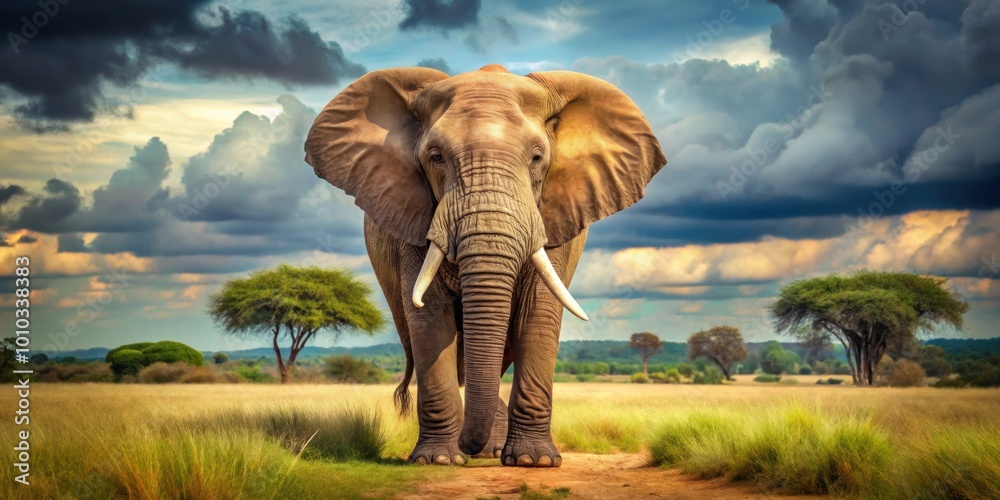

The Majestic Elephant:
Elephants are the largest land mammals, known for their intelligence and strong social bonds.
Physical Features: Elephants have massive bodies, large ears, and a versatile trunk, which they use for drinking, picking up objects, and communicating.
Habitat: Found in Africa and Asia, they live in grasslands, forests, and savannas.
Social Behavior: Elephants are highly social animals, living in herds led by a matriarch. They are known for their ability to mourn the loss of herd members, showcasing deep emotional intelligence.
Threats: Poaching for ivory and habitat destruction are major threats, making conservation efforts crucial.

The Graceful Peacock:
Peacocks are symbols of beauty and elegance, admired for their iridescent feathers.
Physical Features: Male peacocks are famous for their colorful tail feathers, which they spread in a fan-like display to attract females.
Habitat: Native to South Asia, peacocks thrive in forests and grasslands.
Behavior: These birds are ground dwellers but can fly short distances when threatened. They are also known for their loud, distinctive calls.
Cultural Importance: In many cultures, peacocks are associated with grace, immortality, and divinity.

The King of the Jungle "Lion":
Lions are powerful predators, often referred to as the "king of the jungle" due to their dominance in the wild.
Physical Features: Lions have muscular bodies, sharp claws, and a distinctive mane in males, which signifies strength.Habitat: Found primarily in Africa, they prefer grasslands, savannas, and open woodlands.
Social Structure: Lions are unique among big cats because they live in groups called prides, consisting of females, cubs, and a few males.
Conservation Status: Lions are vulnerable due to habitat loss and human-wildlife conflict, highlighting the need for wildlife reserves.


The Playful Dolphin:
Dolphins are marine mammals celebrated for their intelligence and playful behavior.
Physical Features: With streamlined bodies and a dorsal fin, dolphins are excellent swimmers. They use echolocation to navigate and hunt underwater.
Habitat: Found in oceans worldwide, some species also inhabit rivers.
Social Behavior: Dolphins live in pods and communicate through clicks and whistles. Their playful nature often involves jumping out of water and interacting with humans.
Conservation Efforts: Dolphins face threats like pollution, fishing nets, and habitat degradation, making marine conservation essential.
The Mysterious Owl:
Owls are nocturnal birds known for their sharp vision and silent flight.
Physical Features: They have large, forward-facing eyes, sharp talons, and a unique ability to rotate their heads almost 270 degrees.
Habitat: Owls can be found on every continent except Antarctica, inhabiting forests, deserts, and even urban areas.
Behavior: As skilled hunters, owls prey on small mammals, insects, and other birds. Their hoots are a signature sound of the night.
Symbolism: Owls are often associated with wisdom and mystery in various cultures and myths.
Conclusion:
Animals like elephants, peacocks, lions, dolphins, and owls represent the beauty and complexity of nature. Each species contributes uniquely to the ecosystem, reminding us of the importance of preserving wildlife for future generations. Let us celebrate and protect these magnificent creatures.